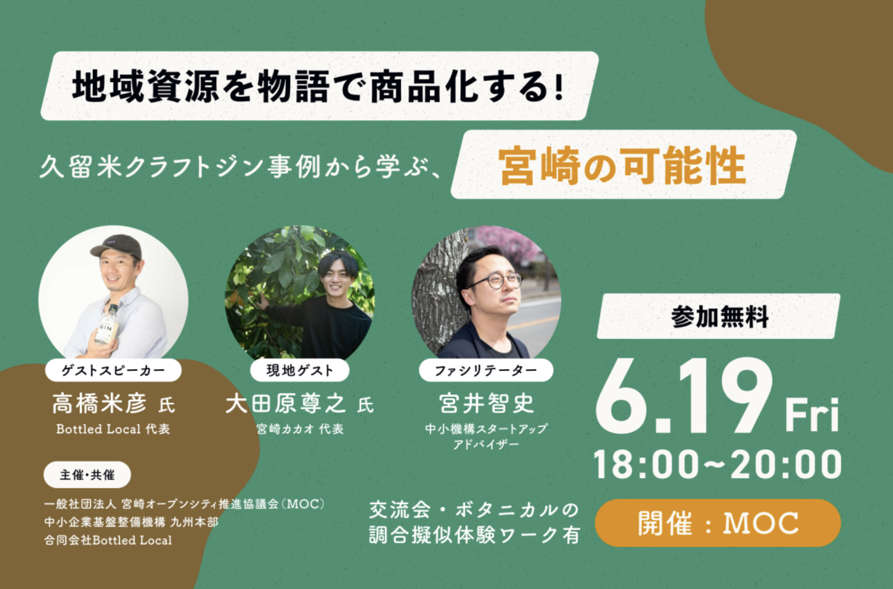
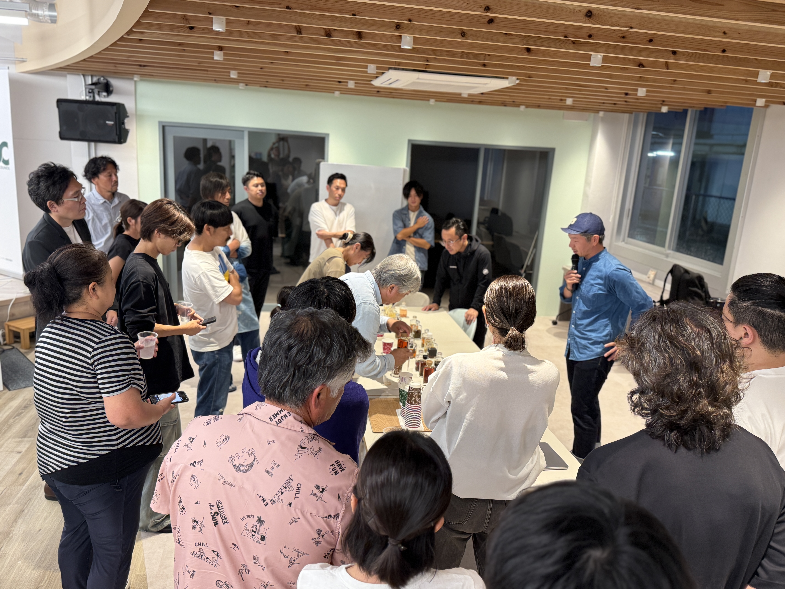
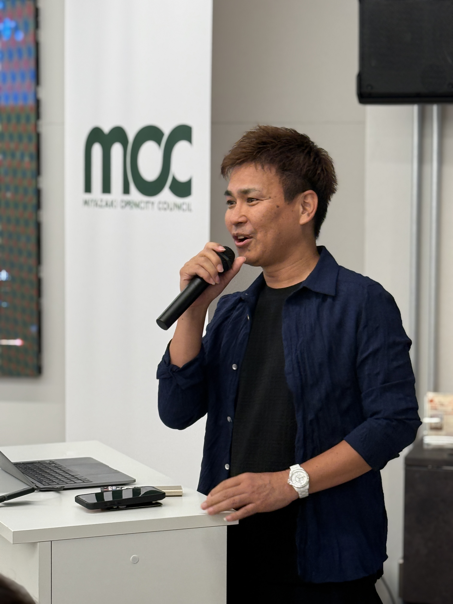

DAY 1｜PRE EVENT
地域を知り、つながる前夜祭
2026年9月11日（金）18:30〜
鹿児島の地域資源や挑戦をテーマに、地域プレイヤーや生産者を交えたプレイベントを開催予定です。内容は決定次第、順次ご案内します。
ここから、鹿児島の挑戦を九州へ、そして世界へ。
起業家・スタートアップ・支援者・事業会社・学生が交差し、
新たな共創や事業加速のきっかけを生み出す2日間です。
前夜のプレイベントから、翌日のピッチイベントへ。
地域を知り、人と出会い、次の挑戦につながる2日間をつくります。
鹿児島の地域資源や挑戦をテーマに、地域プレイヤーや生産者を交えたプレイベントを開催予定です。内容は決定次第、順次ご案内します。
九州各地で挑戦する起業家・事業者が登壇。対話やフィードバックを通じて、次の挑戦へ進むための接点を生み出します。イベント終了後は会場を移し、懇親会を開催します。
宮崎開催では、地域資源をテーマにしたトークセッションとワークショップを実施しました。
鹿児島でも、地域ならではの魅力や挑戦に触れられる場を予定しています。


九州各地の挑戦者が集まり、つながり、加速する。
起業家・支援者・地域プレイヤーが交差する共創イベント。
九州各地から、多様なテーマに挑む起業家・事業者が登壇予定です。
登壇者情報は決定次第、順次公開します。
※登壇者・事業内容は追加・変更となる可能性があります。
登壇者情報は順次公開予定
登壇者情報は順次公開予定
登壇者情報は順次公開予定
登壇者情報は順次公開予定
登壇者情報は順次公開予定
登壇者情報は順次公開予定
登壇者情報は順次公開予定
登壇者情報は順次公開予定
2026年6月に宮崎で第1回を開催。
九州各地から起業家・事業者・支援者が集まり、ピッチと交流を通じて新たなつながりが生まれました。

